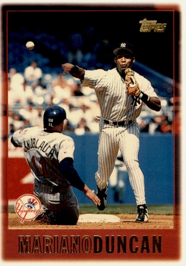

Mariano Duncan
Career Highlights & Facts
(Facts are AI-generated and may require verification)
- Coined the famous clubhouse motto, 'We play today, we win today.'
- Hit grand slams in consecutive innings during a single game.
- Started at all 4 infield positions during a single season.
Would you like to find out more about Mariano Duncan?
Player Biography
Mariano Duncan
February 23, 2023
/
in
BioProject - Person
1990s All-Stars
Dominican Republic
/
by
admin
This article was written by
Malcolm Allen
When the first big-leaguers from the Dominican Republic became All-Stars and competed in the World Series in 1962, Mariano Duncan was in his mother’s womb. He grew up to start one All-Star Game and play for two World Series champions – the 1990 Cincinnati Reds and 1996 New York Yankees. Primarily a middle infielder, Duncan spent 12 seasons (1985-1987, 1989-1997) in the majors with five teams. He was inducted into the Dominican Sports Hall of Fame in 2008.
1
Mariano Duncan Nolasco was born on March 13, 1963, in San Pedro de Macorís. His parents – Enrique Duncan and Nilda Nolasco – had 11 children: eight boys and three girls.
2
They shared a tin shack in Angelina, a mill town surrounding the city’s oldest sugar refinery. One of their neighbors was future big-leaguer
Rafael Ramírez
.
3
Duncan’s grandfather was part of the wave of migrants from mostly British-controlled islands who had come to the Dominican Republic to cut sugar cane; hence his English surname.
4
After losing a leg working in the cane fields, Mariano’s father became a shoemaker. Nilda was a fruit, vegetables, and poultry vendor. “Sometimes Mariano helped me sell, but most of the time, it was
pelota, pelota, pelota
(ball, ball, ball),” she recalled. “He would say, ‘Don’t worry, Mother, when I become a ballplayer, we will be living well.’”
5
Three of Mariano’s younger brothers also played professionally. Twins Andrés and Enrique (b. 1971) peaked in Triple A and Single A, respectively, while Carlos (b. 1977) reached Double A.
Duncan and his peers, including
Tony Fernández
and
Juan Samuel
, initially used cardboard gloves, rolled-up sock balls, and tree branches for bats.
6
He was a fan of the Houston Astros and played center field like their Dominican star,
César Cedeño
, who was also a winter-ball standout for the San Pedro de Macorís-based Estrellas Orientales.
7
“I used to cry when my mother wouldn’t give me money to go see him play,” he said.
8
Duncan received his first batting glove from another Estrellas player, Cincinnati Reds third baseman
Ray Knight
.
9
“I used to go to sleep every single night with that batting glove,” he recalled.
10
At age 15, Duncan stopped attending Liceo Gastón Fernando Deligne to concentrate on baseball. Two years later, the Los Angeles Dodgers rejected him at a tryout. “But after that, I seemed to get stronger every day,” he said.
11
Duncan advanced to one of the country’s top amateur teams, Baterías Meteoro, in Santo Domingo.
12
On January 17, 1982, Dodgers’ scouts Ralph Ávila and
Elvio Jiménez
signed him for $5,000.
13
Intrigued by Duncan’s speed, the Dodgers made him a shortstop and switch-hitter. In 30 appearances with their rookie-level Pioneer League affiliate in Lethbridge (Alberta, Canada) that summer, he committed 15 errors and struck out in 21 of his 55 at-bats. “I almost quit and [went] home. I feel so depressed, so far away from my family,” he said.
14
Yet he persevered. In 1983, Duncan batted .266 and led the Class A Florida State League with 56 steals and 15 triples in 109 games, mostly as an outfielder. His Vero Beach Dodgers won the championship, and he swiped four bases in the title game.
15
Next, Duncan played winter ball in Colombia. His manager with the Indios de Cartagena was Mike Brito, the scout who stood out during television broadcasts from Dodger Stadium; standing behind the backstop in his white Panama hat, with his white Stalker radar gun trained on the pitcher.
16
“The press and the owners wanted me to get rid of [Duncan] because he struck out so many times,” Brito recalled. “I told them, ‘You have to be patient with this kid’… Mariano started making contact, and he stole a lot of bases, and he was like an idol.”
17
In 1984, Duncan manned second base for the San Antonio Dodgers in the Double-A Texas League. He tied for tops in the circuit with 11 triples and batted .253. Next, he joined the Dominican Winter League’s Tigres de Licey. He didn’t play much (.149 in 47 at-bats) for the Santo Domingo-based team, but they won the title, plus the Caribbean Series in Mazatlán, Mexico.
18
Duncan reported to Albuquerque, New Mexico, home of the Dodgers’ Triple-A Pacific Coast League affiliate, after 1985 spring training. But less than 24 hours before L.A.’s season opener, he was told to report to the
Astrodome
.
19
“I thought it was one of my friends calling me up, joking with me. I couldn’t believe I was going to the major leagues,” he said.
20
Steve Sax
had injured his ankle in the final exhibition game, so Duncan replaced him as the Dodgers’ second baseman and leadoff hitter. Facing future Hall of Famer
Nolan Ryan
, Duncan struck out on three pitches in his first at-bat.
21
He finished 0-for-4 with an error that allowed the decisive run to score.
Duncan’s first two hits were singles against knuckleballer
Joe Niekro
the following night. In Niekro’s next start, at Dodger Stadium, Duncan completed his first week in the majors with a tie-breaking seventh-inning homer, batting left-handed. That weekend in San Diego, his first righty round-tripper secured another victory. Two days later, he pulled his left hamstring and missed nine games. By the time he returned to action, Sax was back at second base, but starting shortstop
Dave Anderson
was on the disabled list. Although Duncan had not played there regularly since rookie ball, Dodgers manager
Tom Lasorda
installed him at shortstop on May 5. “The first three weeks, I made a lot of errors, but [coach]
Monty Basgall
worked very hard with me,” Duncan said.
22
That summer, Basgall compared the 22-year-old Duncan to a perennial Gold Glover. “Mariano has a better arm than
Ozzie Smith
and he can outrun Ozzie. He’s not in Ozzie’s class yet, but he’s got a chance to be there.”
23
The following spring, Lasorda opined that Duncan was more advanced than Smith as a rookie and predicted that he would eventually outhit him.
24
Initially, Duncan lived with Dodgers slugger – and fellow San Pedro de Macorís native –
Pedro Guerrero
. “Guerrero is like my mother, my father and my brother,” he said.
25
On August 23, 1985, they hit grand slams in consecutive innings to lead L.A.’s comeback victory in Montreal.
26
With Duncan serving as the primary leadoff hitter down the stretch, the Dodgers won the NL West. In 142 games, he batted .244 with six homers and 38 steals. At least three of his 24 doubles came on bunts.
27
That fall, he finished third in NL Rookie of the Year Award voting.
The Dodgers lost the NLCS in six games to the Cardinals, who had picked up César Cedeño for the September stretch drive. Duncan hit .222 (4-for-18) with two doubles and a triple, and missed one contest after he was spiked below his left knee.
Duncan moved his family into a new home – big-league pitcher
Joaquín Andújar
’s former residence in San Pedro de Macorís. In 37 appearances for Licey that winter, Duncan batted .303 with a Dominican League-leading eight triples.
One week before Opening Day 1986, Guerrero suffered a serious knee injury. Desperate for offense, L.A. signed free agent César Cedeño. “When I saw myself on the same field, wearing the same uniform as that guy,” Duncan said. “It was my dream come true.”
28
But Duncan didn’t raise his batting average above .200 to stay until June 4, and the 35-year-old Cedeño – also struggling – was released shortly thereafter. The Dodgers entered the All-Star break in last place. “A lot of the guys were hurt but I was one Tommy [Lasorda] came down on,” Duncan said. “Lasorda had lost faith in me and I started to lose faith in myself… There’s a lot of pressures when you’re that young and in a new country and playing for a team in a big city with all of the expectations by the media and fans.”
29
Duncan’s sophomore jinx continued. On August 18, he broke his left foot when he was hit by a thrown ball.
30
He missed more than a month and finished the year batting .229 in 109 games. His inside-the-park homer on June 9 and career-high 48 stolen bases were highlights.
Before undergoing surgery to remove fluid and reduce swelling in his left knee that fall, Duncan worked on cutting down his swing in the Arizona Instructional League.
31
“We’re very happy with the fact that Mariano volunteered,” reported Dodgers Vice President
Al Campanis
. “We don’t want him to be a power hitter. We want him to get on base and steal bases.”
32
Duncan had batted .273 right-handed, but just .217 as a lefty in his first two seasons. Six games into the 1987 campaign, he became a fulltime righty swinger. “It was a decision I’ve wanted to [make] for a long time,” he explained. “Campanis wanted me to hit lefthanded.”
33
The change became possible after Campanis was fired for making racially offensive remarks on television’s
Nightline
.
That June, Duncan left the field on a stretcher twice in an 11-day span. First, he was upended on a takeout slide in Atlanta and bruised his left hip.
34
After he was spiked in Houston, his right knee required stitches.
35
Duncan returned after a stint on the 15-day disabled list, but he committed three errors in the second inning at Dodger Stadium on July 23. Before exiting the contest with a migraine after five frames, he tipped his cap to heckling fans.
36
The Dodgers demoted him to Albuquerque. “It wasn’t just one game. If we had to send him down for one bad game, we’d have done it a long time ago,” Lasorda said.
37
When Duncan was recalled 10 days later, Lasorda observed, “He’s not going to be a good ballplayer unless he hits the ball on a line and bunts for hits.”
38
On August 16, Duncan slid into first base attempting to beat out a bunt single and tore a ligament in his left knee, ending his season.
39
In 76 games, he batted .215.
That fall, the Dodgers signed free agent shortstop
Alfredo Griffin
. While Duncan was hitting .244 for Licey and leading the Dominican League in triples. Griffin met with him in Santo Domingo. “He [told] me to ask him if I have any questions. I try to stay as close to him as I can,” Duncan said. Griffin encouraged him to swing down on the ball, hit to the opposite field, and not to try to do too much. “Alfredo does all those things better than him,” observed Dodgers coach
Manny Mota
, a Dominican like the two infielders. “[Duncan] gets frustrated too much. He needs to concentrate more.”
40
Duncan’s 1988 season was a disaster. Early in spring training, he had a minor clubhouse altercation with L.A.s biggest offseason acquisition, outfielder
Kirk Gibson
.
41
On March 22, Duncan and Guerrero missed the team bus and the beginning of an exhibition game.
42
Five days later, Duncan was optioned to Triple-A Albuquerque. He responded by calling Lasorda a liar, insisting that he had been promised a place on L.A.’s Opening Day roster, a contention that the manager disputed.
43
Duncan threatened to quit baseball, but his father, agent, Guerrero, and Griffin talked him out of it.
44
He had played second base in winter ball at the Dodgers’ request. “Now I’m playing shortstop in the minor leagues. It just doesn’t make sense to me,” Duncan said.
45
When Griffin broke his hand on May 21, Duncan was sidelined by a strained hamstring, so, L.A. called up
Mike Sharperson
instead.
46
In June, Duncan missed several weeks with a stress fracture in one of his ribs.
47
On July 25, he broke the hamate bone in his left wrist swinging at a pitch, ending his season after appearing in just 56 minor league games.
48
Meanwhile, the Dodgers won the World Series.
That winter, Duncan stole 17 bases in 48 games for Licey and earned a Dominican League Gold Glove for his play at second base. During spring training 1989, he said, “I have a good attitude now… I have learned from my mistakes, I am more mature.” Some speculated that he would benefit from Guerrero’s departure – the slugger had been traded to the Cardinals the previous summer. “People think Pete [Guerrero] was a bad influence on me,” Duncan acknowledged. “But Pete tried to help me. He really did. He said I got mad too fast. He never tried to teach me bad things.”
49
Duncan made L.A.’s Opening Day roster and appeared in 49 of the first 92 games, though only 16 were starts. On July 18, he was traded to the Cincinnati Reds with pitcher
Tim Leary
for outfielder
Kal Daniels
and utilityman
Lenny Harris
. The Reds’
Barry Larkin
had injured his throwing arm during the All-Star Game, so Duncan started most of Cincinnati’s remaining games at shortstop. “One day I’m in the Dodger doghouse, the next day I’m in the Reds lineup. I was the happiest man in the world,” he said.
50
On August 4, Duncan hit his only career walk-off homer, against the Braves’
Joe Boever
. When he took Atlanta’s
Derek Lilliquist
deep the following evening, it was the only time Duncan ever led off a game with a round-tripper.
Reds skipper
Pete Rose
was banned from baseball for gambling a few weeks later, and Cincinnati hired
Lou Piniella
as their manager for 1990. Duncan, formerly a 6-foot, 160-pound rookie, weighed 192 for his first spring training with his new team after adding 12 pounds of upper body muscle during the offseason. As the Reds’ Opening Day second baseman, he homered against
Mike Scott
at the Astrodome. Through May 10, Duncan’s .400 batting average led the majors, and he credited tips from Piniella and hitting coach
Tony Pérez
. “My dream is to hit .300,” he said. “From what I see, everything Tony and Lou says works. I seem to improve with everything they teach me.”
51
In 125 games, Duncan batted .306 with an NL-high 11 triples. His Adjusted OPS+ of 120 was also a career high. The Reds won the NL West and defeated the Pittsburgh Pirates in a six-game NLCS. In Game Three at
Three Rivers Stadium
, Duncan went 3-for-5 with four RBIs, including a tie-breaking three-run homer off
Zane Smith
. Cincinnati won the World Series by sweeping the Oakland Athletics.
Although Duncan was in the lineup for every postseason game, the Reds’ original plan was for
Bill Doran
to start against righties. But the switch-hitter – acquired from Houston on August 30 – was hospitalized with back spasms in the final week of the regular season.
52
Cincinnati re-signed Doran to a three-year contract in December, prompting Duncan to request a trade.
53
“They didn’t want to make a move because Barry Larkin has been hurt a lot and Doran was hurt a lot and they wanted me to be a kind of insurance policy,” he said.
54
Duncan remained with the Reds for the entire 1991 season and batted .258 in 100 games. Nine of his career-high 12 homers came in a span of 85 at-bats between August 23 and September 15. He became a free agent and signed a two-year, $4.5 million deal with the Philadelphia Phillies in December 1991. “Cincinnati wanted me back. But I had a bad time there last year because I didn’t play,” he said. “I decided to come to Philadelphia, because it was a place I thought I could have fun.”
55
Phillies manager
Jim Fregosi
said, “When we signed Mariano we expected him to be the same for the Phillies what
Tony Phillips
is for the Tigers, probably the most valuable player they have.”
56
(Phillips qualified for the batting title in 1991 despite not starting more than 35 games at any single position.) In 1992, Duncan established personal bests with 153 hits and 40 doubles while splitting his starts between left field (58), second base (50), shortstop (26), and third base (three). At Candlestick Park on May 3, he had his only career 5-for-5 game and scored five runs. But Philadelphia finished in last place.
On May 9, 1993, the Phillies trailed St. Louis, 5-2, with two outs in the bottom of the eighth inning at Veterans Stadium, when Duncan clubbed a game-winning grand slam off future Hall of Famer
Lee Smith
. The victory improved Philadelphia’s major-league best record to 22-7. Now 30, Duncan was initially the chief middle-infield backup, but he supplanted
Juan Bell
as the starting shortstop before yielding the position to rookie
Kevin Stocker
in mid-summer. After July 28, Duncan played exclusively at second base. He batted .302 after the All-Star break, and said, “When you only have to worry about playing one position, you can hit a lot better. It made me more comfortable.” From August 28 to September 19, he hit safely in a personal best 18 consecutive games. He finished with a career-high 73 RBIs – five in the NL East-clinching victory at Pittsburgh on September 28, including a grand slam off
Denny Neagle
. “That was the biggest hit of my life,” Duncan said afterward. “The biggest.”
57
“[Duncan] keeps everybody loose in the clubhouse,” observed Phillies coach
Denis Menke
. “He’s been through pennant races before and he knows what to expect, and I think that helped some of the younger players get through this.”
58
In Philadelphia’s NLCS triumph over Atlanta, Duncan appeared in just three of the six contests, but he tripled twice in Game Three. He started every World Series game against the Blue Jays, batting .345 with a team-high 10 hits. The Phillies were within two outs of forcing a Game Seven when
Mitch Williams
surrendered a walk-off homer to Toronto’s
Joe Carter
.
Philadelphia exercised the option year on Duncan’s contract, and he played all four infield positions in 1994. With 2,029,752 fan votes, he was elected the NL’s starting second baseman for the All-Star Game in Pittsburgh.
59
In his only at-bat, Duncan grounded out against Toronto’s
Jimmy Key
. When the players’ strike ended the season in early August, the Phillies were under .500 and Duncan had hit .268 in 88 games.
Duncan’s contract expired during the work stoppage. When the strike was settled in April 1995, he signed a one-year deal to return to Philadelphia for $350,000 plus incentives. Duncan’s agent, Tony Attanasio, acknowledged that it was an “embarrassing” cut from his client’s previous $2.2 million salary, but noted, “He felt like the potential for playing time was better in Philadelphia where the manager knows him. He loves it here.”
60
Through August 6, Duncan was batting .286 but had started fewer than half of Philadelphia’s games. Always an aggressive hitter, his strikeout-to-walk ratio was even more extreme: 43 K’s and zero bases on balls in 201 plate appearances. The Phillies waived him, and he was claimed by the Reds.
In 29 appearances for Cincinnati, Duncan started at four positions and batted .290 with three homers – including a three-run shot on September 24 in Philadelphia. The Reds won the NL Central and swept the Dodgers in the Division Series, but they were eliminated by the Braves in the NLCS. Duncan hit .333 (2-for-6) in five postseason appearances.
For the first time in six years, Duncan played in the Dominican Winter League. Two weeks before Christmas 1995, he signed a two-year, $1.5 million deal with the Yankees. “The manager’s best friend is the guy you can plug in anywhere,” said New York’s new skipper,
Joe Torre
. “Besides being a great utility player, he’s outstanding in the clubhouse with the younger players.”
61
Duncan said. “I’m here for one reason. I signed with the Yankees to do what’s best for the ball club.”
62
After
Pat Kelly
’s rehabilitation from offseason surgery stalled, and Tony Fernández sustained a season-ending elbow fracture in spring training, Duncan wound up starting at second base. On Opening Day of 1996 in Cleveland, he scored New York’s first run of the season.
Torre asked Duncan to shepherd shortstop
Derek Jeter
, who turned 22 that summer. “Take him to lunch, make sure he’s preparing the right way, playing the game the right way, that was my job,” Duncan recalled. During one pregame workout, he used the words, “We play today?” to ask the rookie if he was ready. When Jeter replied, “We win today,” Duncan said, “Das it!”
63
Duncan had “We play today, we win today” shirts made. By late July, New York’s
Daily News
noted, “It has evolved into the unofficial Yankees motto and now is emblazoned on T-shirts that hang in every locker.”
64
Torre wore his during every game.
65
New York won the AL East, and Duncan batted a career-high .340 in 109 games. In 160 at-bats at Yankee Stadium, he hit .406. During the postseason, Duncan’s average was just .180 (9-for-50), but his tie-breaking RBI single in the ninth inning of ALDS Game Three in Texas helped the Yankees seize control of that series. New York ousted Baltimore in the ALCS, then defeated Atlanta in the World Series to win their 23rd championship, but first in 18 years. “Anybody that plays major league baseball wants to play for the New York Yankees,” Duncan said. “This is the ultimate. I’m so proud and happy to be a part of this team.”
66
On March 4, 1997, Duncan became a U.S. citizen.
67
“I feel I owe this country something. I live here. I work here. I make my money here… I love this country,” he said.
68
“I love the Dominican, too. I always will. But I’d love to be a citizen of both countries.”
69
In 1997, Duncan remained New York’s primary second baseman until he “butchered two plays but wasn’t charged with an error” in a May 30 loss to the Red Sox at
Fenway Park
.
70
He came off the bench and played the tail end of a 15-inning contest at second the following evening but, shortly thereafter, Yankees owner
George Steinbrenner
told reporters that Duncan would never play the position for the Yankees again.
71
Duncan demanded a trade. Then he asked for his release.
72
Although he did make consecutive starts at second three weeks later, he appeared in only 10 of New York’s 48 games between June 2 and July 28. Finally, on July 29, Duncan was traded to the Blue Jays for Double-A outfielder Angel Ramírez. With Toronto, Duncan started 39 games – all at second base – and batted .228. Two years later, he reflected on his experience with Steinbrenner: “He’s nuts, and there’s nothing you can do about it. He’s crazy. Everybody knows it.”
73
In 1998, Duncan signed with the Tokyo-based Yomiuri Giants of the Japan Central League and hit .232 with 10 homers in 63 games. Dissatisfied with the lifestyle of ballplayers there, he quit the team before the season finished. “I said, ‘You can keep your money. I’m out of here,’” he explained. “Life is too short.”
74
Duncan, 36, went to spring training with the Mets in 1999, but he didn’t make the team. After catching on with the Florida Marlins’ Triple-A PCL affiliate, he tore his Achilles tendon in his second appearance. Other than 22 games with the independent Bridgeport (Connecticut) Bluefish later that summer, Duncan’s professional playing career was over. In 1,279 games in the majors, he batted .267 with 87 homers and 174 steals. He appeared in the postseason five times with four different teams and earned two World Series rings.
Duncan opened a baseball academy for kids in the Dominican Republic in 2001. “I wanted to see if I had a passion to work with the youngsters,” he explained. “I found out right away that’s what I wanted to do the rest of my career.” In 2003, he sent his resume to the Dodgers. The organization’s minor-league field coordinator,
Terry Collins
, hired him as the hitting instructor for L.A.’s rookie-level team in the Gulf Coast League. Collins had managed the championship Licey squad for which Duncan had played, as well as the Albuquerque club with which he’d regrouped in 1988. “
Terry Collins
is like my father in baseball. He saved my career,” Duncan remarked in 2021.
75
In 2004, Duncan was the hitting instructor for the Dodgers’ Double-A Jacksonville Suns affiliate, followed by the Triple-A Las Vegas 51s in 2005. From 2006 to 2010, he returned to the majors as the Dodgers’ first-base coach under two managers,
Grady Little
and Torre. He also worked for various Dominican Leagues teams, including a stint as the Toros del Este’s bench coach.
76
When the Dodgers hired skipper
Don Mattingly
in 2011, he shuffled the coaching staff. Duncan landed in the Chicago Cubs’ system as a hitting instructor at various levels from 2011 to 2017. Following one year in the same role with the Tigers’ organization, he moved on to the Mets’ farm system. Duncan was the bench coach for the (Class A) Brooklyn Cyclones in 2021. In February 2023, the (Double-A) Binghamton Rumble Ponies announced that he would return for a second season as their bench coach.
Duncan’s first wife, Jackie Cole, was a former Raiderette whom he married during his Dodgers years.
77
After they divorced, he wed Julia Restrepo, of Venezuela, and became a father.
78
The Dodgers’ 2010 media guide named his third spouse, Monique Weithers, of Toronto.
79
As of 2021, Duncan was the father of five sons and two daughters.
80
Miami was his primary offseason residence during his playing career, but his personal Facebook page said he lived in Toronto as of 2023.
Acknowledgments
The biography was reviewed by Rory Costello and Rick Zucker and fact-checked by Ray Danner.
Sources
In addition to sources cited in the Notes, the author consulted
www.ancestry.com
,
www.baseball-reference.com
, and
https://sabr.org/bioproject
.
Mariano Duncan’s Dominican League statistics from
https://stats.winterballdata.com/home
(subscription service, last accessed January 21, 2023).
Notes
1
“Duncan Seleccionado Para Entrar Pabellón de la Fama,”
Listín Diario
(Dominican Republic), October 7, 2008,
https:
(last accessed January 24, 2023).
2
Gordon Edes, “A Natural: Duncan Arrives Ahead of Schedule,”
Los Angeles Times
, August 20, 1985: C1. The 1985 Edes article said that Duncan was one of 10 children, but many other sources, including one of Edes’ subsequent pieces, report 11. Gordon Edes, “Duncan Responsible for Team’s Heat and Soles,”
Sun Sentinel
(Fort Lauderdale, Florida), October 17, 1996: 4C.
3
Edes, “A Natural: Duncan Arrives Ahead of Schedule.”
4
Rob Ruck,
The Tropic of Baseball
, (New York: Carroll & Graf Publishers, 1991), 138.
5
Steve Wulf, “Standing Tall at Short,”
Sports Illustrated
, February 9, 1987: 145.
6
Mariano Duncan’s 1985 Topps Traded baseball card mentioned the other players. His 1995 Topps card described the equipment.
7
Cedeño debuted with Estrellas in fall 1968 and played his final game for the club in December 1973, when Duncan was 10.
8
Kimberley Todd, “A Thirst for The Show,”
Calgary Herald
, July 24, 1999: C1.
9
Knight played for the Estrellas in the 1976-77 and 1977-78 campaigns.
10
“Minor League Stories: Mariano Duncan,” AMinorLeagueSeason
YouTube
channel, August 18, 2012,
https://www.youtube.com/watch?v=Pwz7C-oJX8Y
(last accessed January 26, 2023).
11
Edes, “A Natural: Duncan Arrives Ahead of Schedule.”
12
“Mariano Duncan Sera Inmortal por Segunda Occasión en RD,”
Periodista 23
, August 29, 2013,
http:
(last accessed January 25, 2023).
13
Duncan told Steve Wulf that his bonus was $5,000, but the Gordon Edes article from Note 2 reported $3,500. Wulf, “Standing Tall at Short.”
14
Todd, “A Thirst for The Show.”
15
Mariano Duncan, 1986 Topps Kay-Bee Young Superstars baseball card.
16
Kyle Glaser, “Obituary: Mike Brito, Legendary Dodgers Scout Who Signed Fernando Valenzuela,”
Baseball America
, July 8, 2022, https: (last accessed February 2, 2023).
17
Edes, “A Natural: Duncan Arrives Ahead of Schedule.”
18
Rafael Landestoy
and
José Uribe
were Licey’s primary second basemen that winter.
19
Mike Downey, “That Mariano Duncan, He’s a Real Pip,”
Los Angeles Times
, October 9, 1985: C1.
20
Edes, “A Natural: Duncan Arrives Ahead of Schedule.”
21
Downey, “That Mariano Duncan, He’s a Real Pip.”
22
Edes, “A Natural: Duncan Arrives Ahead of Schedule.”
23
Edes, “A Natural: Duncan Arrives Ahead of Schedule.”
24
Frank Carroll, “Duncan’s a Dodger on the Rise,”
Orlando Sentinel
, March 10, 1986: B4.
25
Edes, “A Natural: Duncan Arrives Ahead of Schedule.”
26
Two players hadn’t hit grand slams in one gamer for the franchise since September 23, 1901, when the team was called the Brooklyn Superbas, and
Jimmy Sheckard
and
Mike Kelley
did it in a 25-6 victory at League Park in Cincinnati. Gordon Edes, “Guerrero, Duncan Hit Grand Slams in Costly Loss for Expos,”
Los Angeles Times
, August 24, 1985: B1.
27
Gordon Edes, “Dodgers Win Laugher,”
Los Angeles Times
, July 7, 1985: 1.
28
Todd, “A Thirst for The Show.”
29
Ross Newhan, “Tonight’s DH? It’s Fine with Duncan,”
Los Angeles Times
, October 23, 1993: C12.
30
Gordon Edes, “Duncan Out – Broken Foot,”
Los Angeles Times
, August 20, 1986: D1.
31
“Newswire,”
Los Angeles Times
, November 21, 1986: 4.
32
“Mariano Duncan: It’s Back to the Basics,”
Los Angeles Sentinel
, April 9, 1987: B3.
33
Sam McManis, “Another Surprise from the Dodgers,”
Los Angeles Times
, April 12, 1987: 1.
34
Sam McManis, “Duncan Injured in Spill at Second,”
Los Angeles Times
, June 9, 1987: 8.
35
Sam McManis, “Dodger Notes,”
Los Angeles Times
, June 19, 1987: 1.
36
Sam McManis, “Now It’s Their Turn,”
Los Angeles Times
, August 7, 1987: 4.
37
Sam McManis, “Duncan Sent to Albuquerque,”
Los Angeles Times
, July 26, 1987: 8.
38
McManis, “Now It’s Their Turn.”
39
Sam McManis, “Torn Ligament Ends Duncan’s Season,”
Los Angeles Times
, August 20, 1987: 5.
40
Sam McManis, “Speaking the Same Language,”
Los Angeles Times
, March 9, 1988: 1.
41
Sam McManis, “New Dodger Makes Mad Dash,”
Los Angeles Times
, March 4, 1988: 1.
42
Sam McManis, “It’s a Dodger Headache, Guerrero, Duncan Miss Bus but Lasorda Directs Anger Elsewhere,”
Los Angeles Times
, March 23, 1988: 1.
43
Sam McManis, “Duncan is Irate After Demotion,”
Los Angeles Times
, March 28, 1988: 1.
44
Newhan, “Tonight’s DH? It’s Fine with Duncan.”
45
Marty Esquivel, “Mariano’s Mission,”
Los Angeles Times
, April 27, 1988: D1.
46
Sam McManis, “Duncan Says He is Not Surprised That Dodgers Didn’t Call Him Up,”
Los Angeles Times
, May 23, 1988: 13.
47
Sam McManis, “Dodger Notes,”
Los Angeles Times
, June 7, 1988: 1.
48
Tom Keegan, “Dodgers Roll Past Giants,”
Orange County
(California)
Register
, July 27, 1988: D1.
49
Gordon Verrell, “Duncan Tempers Temper,”
The Sporting News
, March 27, 1989: 32.
50
Ross Newhan, “Reds Rejuvenate Mariano Duncan,”
Los Angeles Times
, May 5, 1990: C9.
51
Newhan, “Reds Rejuvenate Mariano Duncan.”
52
“Notes,”
Chicago Tribune
, October 1, 1990: 9.
53
“Duncan Seeking Starting Role,”
Edmonton
(Alberta, Canada)
Journal
, March 25, 1991: D4.
54
Paul Hagen, “Picking His Spots,”
Philadelphia Daily News
, March 25, 1992: 80.
55
Hagen, “Picking His Spots.”
56
Mariano Duncan, 1994 Leaf Limited baseball card.
57
Sam Carchidi, “And the Fun Goes On, But with Higher Stake,”
Philadelphia Inquirer
, September 29, 1993: D1.
58
Carchidi, “And the Fun Goes On, But with Higher Stake.”
59
“NL All-Star Voting,”
USA Today
(McLean, Virginia), July 5, 1994: 5C.
60
Frank Fitzpatrick, “Phillies Re-Sign Mariano Duncan,”
Philadelphia Inquirer
, April 14, 1995: D1.
61
Charlie Nobles, “Yankees Going with Duncan in ‘Desperate’ Infield Move,”
New York Times
, March 28, 1996: B15.
62
Nobles, “Yankees Going with Duncan in ‘Desperate’ Infield Move.”
63
Duncan’s awkward wording stemmed from the fact that English was not his first language. Jeff Bradley, “Derek Jeter’s Old Mentor, Mariano Duncan, Was Right on the Money,”
Star-Ledger
(Newark, New Jersey), May 22, 2011,
https://www.nj.com/yankees/2011/05/bradley_derek_jeters_old_mento.html
(last accessed January 24, 2023).
64
John Giannone, “Yankees Follow Their Own Script,”
Daily News
(New York, New York), July 28, 1996: 76.
65
Tom Yantz, “Duncan Adds Some Spark to This Outfit,”
Hartford
(Connecticut)
Courant
, October 20, 1996: E6.
66
Don Bostrom, “Series Victory is Vindication for Some Yankees’ Players,”
Morning Call
(Allentown, Pennsylvania), October 28, 1996: C1.
67
Cecil Harris, “This and That,”
Rockland
(New York)
Journal-News
, March 7, 1997: 3D.
68
The article noted that Duncan would be a dual citizen of the U.S. and the Dominican Republic. The latter country had changed its laws since
Julio Franco
was forced to relinquish his Dominican citizenship to become a naturalized American in 1985. Bob Klapisch, “Duncan Training to Become Citizen”
Record
(Hackensack, New Jersey), March 3, 1997: S2.
69
Cecil Harris, “Duncan Looks to Become True Yank,”
Courier-News
(Bridgewater, New Jersey), March 3, 1997: C5.
70
John Giannone, “Flashes,”
Daily News
, May 31, 1997: 44.
71
Jack Curry, “Wait a Minute: Duncan Isn’t Going So Quickly: Steinbrenner Roars, But a Clubhouse Leader Roars Back,”
New York Times
, June 5, 1997: B19.
72
Claire Smith, “Sojo Rides Hot Streak as Duncan Feels Chill,”
New York Times
, June 12, 1997: 21.
73
T.J. Quinn, “Duncan Glad to be Away from Boss,”
Record
, February 25, 1999: S7.
74
Quinn, “Duncan Glad to be Away from Boss.”
75
Jacob Resnick, “Cyclones’ Mariano Duncan on Ronny Mauricio: ‘I’ve Never Seen anyone with So Much Talent in That Position,”
SportsNet New York
, August 14, 2021,
https: 12/17/22
(last accessed January 22, 2023).
76
“Toros Esperan Celebrar Su Bodas de Plata Con Corona,” October 8, 2008,
https:
(last accessed January 25, 2023).
77
The Raiderettes are the cheerleaders for the National Football League’s Raiders franchise, which was based in Los Angeles from 1982 to 1995. “Wedding Bells for Dodgers,”
Los Angeles Sentinel
, November 5, 1987: B4.
78
Juan Vene, “El Triunfador Mariano Duncan,”
El Diario La Prensa
(New York, New York), May 5, 1996: 42.
79
“Dodgers – Coaches,”
http://mlb.mlb.com/team/coach_staff_bio.jsp?c_id=la&coachorstaffid=113620
(last accessed January 22, 2023).
80
According to the Brooklyn Cyclones’ 2021 online media guide, the children’s names were Mariano Jr., Christopher, Dustin, Jonathan, Damaris, Luis Enrique, and Marianny. “Brooklyn Cyclones, Coaching Staff,”
https://www.milb.com/brooklyn/team/coaches
(last accessed August 7, 2021).
Full Name
Mariano Duncan Nalasco
Born
March 13, 1963 at San Pedro de Macoris, San Pedro de Macoris (D.R.)
Stats
Baseball Reference
Retrosheet
Tags
1990s All-Stars
·
Dominican Republic
·
Career Totals
| WAR | AB | H | HR | BA | R | RBI | SB | OBP | SLG | OPS | OPS+ |
|---|---|---|---|---|---|---|---|---|---|---|---|
| 5.8 | 4677 | 1247 | 87 | .267 | 619 | 491 | 174 | .300 | .388 | .688 | 86 |
Statistics via Baseball-Reference.com
The Original Clue